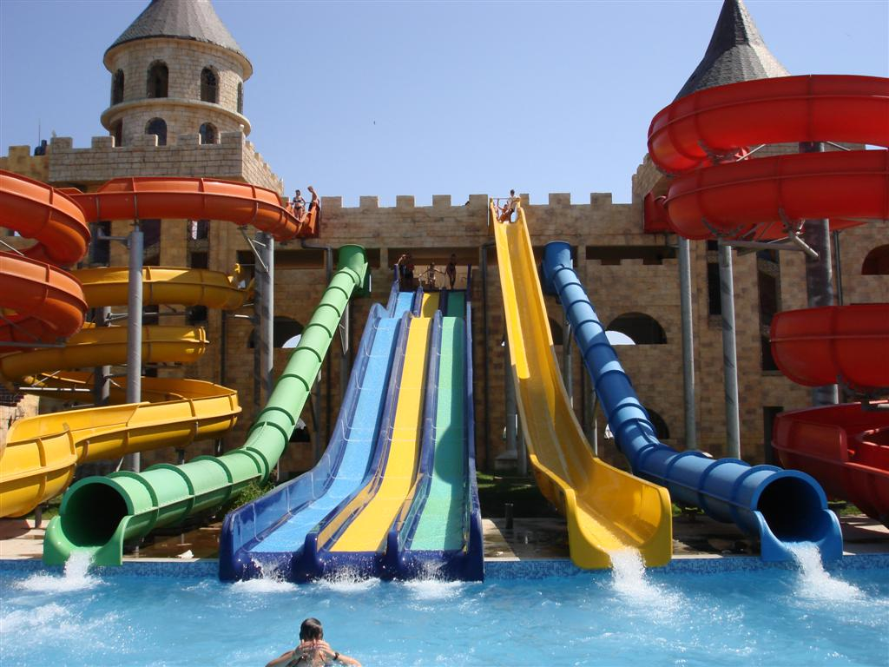
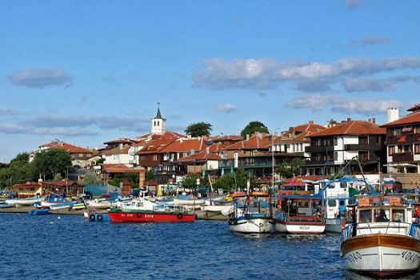
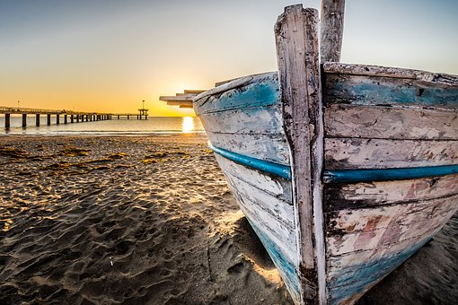

Ravda
Ravda is a coastal village and seaside resort in southeastern Bulgaria, situated in Nesebar municipality, Burgas Province. Ravda is a small seaside resort on the Black Sea, located 3 km from Nesebar and 5 km from Sunny Beach. 30 km from Bourgas airport. The position on the Bulgarian Black Sea Coast provides for the nice weather, quietness and calmness of a country village and the proximity to the attractive resorts Nesebar and Sunny Beach offers plenty of attractions and entertainment possibilities.

Ravda has ecologically clean air and water because the resort is far from the big cities and industrial zones. There are no dangerous species. Ravda's beaches have fine sand, sunshades are provided for the tourists and there are qualified lifeguards on duty. The cafes and bars near the seaside offer refreshing drinks. (Wikipedia)
Nessebar
Situated on a rocky peninsula on the Black Sea, the more than 3,000-year-old site of Nessebar was originally a Thracian settlement (Menebria). At the beginning of the 6th century BC, the city became a Greek colony. The city’s remains, which date mostly from the Hellenistic period, include the acropolis, a temple of Apollo, an agora and a wall from the Thracian fortifications.
Among other monuments, the Stara Mitropolia Basilica and the fortress date from the Middle Ages, when this was one of the most important Byzantine towns on the west coast of the Black Sea. Wooden houses built in the 19th century are typical of the Black Sea architecture of the period. (UNESCO)

Burgas

Burgas is a city on Bulgaria’s Black Sea coast. At its heart, the Church of Saint Cyril and Methodius is known for striking stained-glass windows over its main entrance. Nearby, the Ethnographic Museum explores Bulgarian folk culture, with colorful costumes and everyday items. Along Burgas Bay is the Sea Garden, with broad promenades, performances at its Summer Theatre and a viewing platform at the end of its pier. (Wikipedia)
Along with the good transport connections, sea outlet, developed industry and at the same time preserved history, nowadays Burgas is also an attractive destination for tourists. The city and the region offer diverse tourism options: marine tourism, cultural tourism with multiple museums and cultural sites, health and SPA tourism, ornithological, wine degustation tourism, etc. (Bulgaria Travel)